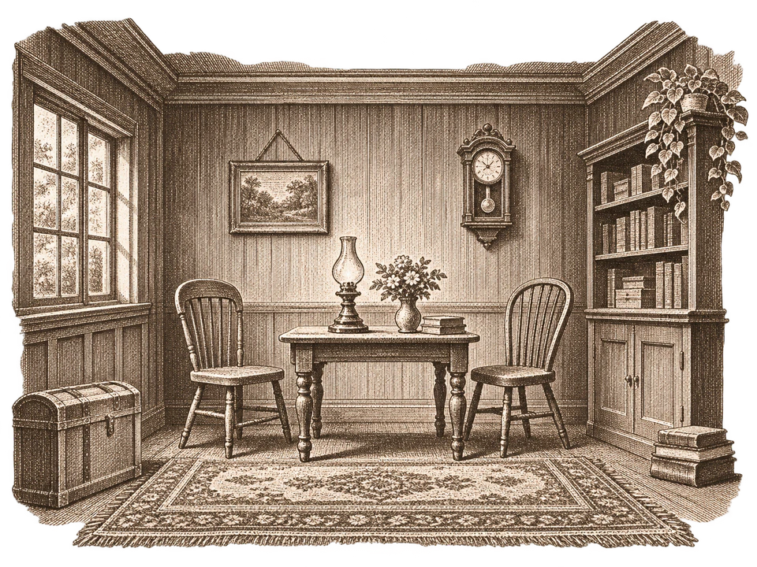

創設於二〇二六年 · 匹茲堡 · 上海2026 年开张 · 匹兹堡 · 上海Established 2026 · Pittsburgh & Shanghai
ZHANG & CO. · GENERAL MERCHANDISEZHANG & CO. · GENERAL MERCHANDISE張氏商行 · GENERAL MERCHANDISE
ILLUSTRATED CATALOGUE OF PLAYTHINGSILLUSTRATED CATALOGUE OF PLAYTHINGS玩物圖錄 · ILLUSTRATED
第壹號 · 二〇二六年第 1 期 · 2026 年No. 1 · Season of 2026
三件俱為店主手製 · 一律免費供應
凡有瀏覽器者，皆可即刻取用三件作品都是我亲手做的 · 全部免费
有浏览器就能马上打开Three articles made by the proprietor · free of charge
for anyone with a browser
☞ 翻開圖錄 ☜☞ 翻开看看 ☜☞ Open the catalogue ☜
張氏商行 · 告白张氏商行 · 写在前面Zhang & Co. · To our customers
A WORD FROM THE PROPRIETORA WORD FROM THE PROPRIETOR商行告白
敬啟者：本行所列三件，皆係店主一人於課餘夜間手製。既無夥計，亦無股東，故不收分文。凡有瀏覽器者，點開即可取用，不必開戶，不必安裝，下單即取。各件圖紙俱存於印刷所，任人查閱，仿製亦無妨。你好：这本图录里的三件作品，都是我一个人在课余和深夜做出来的。没有同事，也没有投资人，所以一分钱都不收。有浏览器就能直接打开：不用注册，不用安装，点开就能玩。每件作品的源码都放在 GitHub 上，随便看，想照着做一个也没问题。 Dear customer: the three articles listed herein were made by the proprietor alone, at night, after lessons. There are no clerks and no shareholders, so nothing is charged. Anyone with a browser may open them at once: no account, no installation, orders filled the instant they are placed. The plans of every article are kept at the printing works for anyone to inspect, or copy.
本錄所載各件，日後或有增補；屆時另印新錄，奉告諸君。以后可能还会加新作品；到时候再出新的一期，告诉大家。Further articles may be added in time; a new catalogue will be printed when they are, and you shall hear of it.
店主 張嘉曦 謹啟
二〇二六年秋—— 张嘉曦
2026 年秋Your obedient servant,
Jiaxi Zhang, proprietor
Autumn, 2026
營業條款几点说明Terms of Business
藏書票本书属于Ex libris
讀者你the reader
張氏商行 · 玩物圖錄张氏商行 · 小玩意图录Zhang & Co. · Playthingsii
張氏商行 · 目錄及價目张氏商行 · 目录和价格Zhang & Co. · Contents & prices
CONTENTS & PRICES · SEASON OF 2026CONTENTS & PRICES · SEASON OF 2026目錄及價目 · 二〇二六年
| 貨號编号No. | 品名作品Article | 價目价格Price | 頁页Page | |
|---|---|---|---|---|
| 1 | 同詞相遇同词相遇The Same-Word Game二人猜詞遊戲 · 中文對局双人猜词游戏 · 中文A guessing game for two, in Chinese | 免費免费Free | 3 | |
| 2 |  | 空房一間一间空房A Vacant Room三壁一地 · WebGL 所繪 · 家具隨附WebGL 画的房间 · 附带家具Three walls and a floor, drawn in WebGL, furniture supplied | 免費免费Free | 5 |
| 3 | 音樂日記一冊音乐日记A Music Journal聽專輯的時候我在想些什麼 · 即將發售听专辑时我在想什么 · 即将上线What I was thinking while listening · forthcoming | 待定待定T.B.A. | 7 | |
本行各貨所有作品Every article in this book一律免費供應！全部免费！Free of Charge!EVERY ARTICLE FREE OF CHARGEEVERY ARTICLE FREE OF CHARGE一律免費供應
訂購須知怎么用How to Order
每翻一頁即一件：左頁使用方法，右頁商品告示。印刷所與信函見末頁。每个跨页介绍一件作品：左页讲玩法，右页是介绍。版权信息在最后一页。One article to a spread: how it is used on the left, the advertisement on the right. Printing works and letters on the last page.
1各件均免費全部免费Every article free of charge
張氏商行 · 使用方法 · 第壹號张氏商行 · 使用说明 · 1 号Zhang & Co. · How to use · No. 1
同詞相遇 · 遊戲規則四條同词相遇 · 四条规则The Same-Word Game · four rules of play
凡二人各有一瀏覽器，即可依下列四條行之。两个人，各用一个浏览器，就能按下面四条来玩。Any two persons, each with a browser, may play by the four rules below.
將四字母房碼或鏈接寄予友人。無須旁人主持，二人即可。把四个字母的房间码或链接发给朋友。不需要第三个人主持，两个人就够。Send the four-letter code, or the link, to a friend. No umpire needed; two is enough.
寫畢同時揭曉。写完同时亮出来。Both are shown at once.
遊戲勝；不同，則各可選「我覺得一樣」，二人皆選亦算勝。游戏胜利；不一样的话，两人都可以点“我觉得一样”，都点了也算赢。The game is won. If they differ, each may say “I think they are the same”; two such votes also win.
「海」與「火車」之後，或可書「港口」。不得重複。數一數幾輪相遇。比如“海”和“火车”之后，可以写“港口”。用过的词不能再用。看看几轮能相遇。After sea and train, perhaps harbour. Nothing twice. Count the rounds.
| 回合回合Round | 甲書甲写A writes | 乙書乙写B writes | 結果结果Result |
|---|---|---|---|
| 一11 | 海海sea | 火車火车train | 未遇不同apart |
| 二22 | 港口港口harbour | 港口港口harbour | 相遇相遇！met! |
二輪而遇：「海」與「火車」之間，二人不約而同想到了「港口」。第二轮就相遇了：在“海”和“火车”之间，两人不约而同想到了“港口”。Met in two rounds: between sea and train, both thought of harbour.
☞ 附告：構築於 Cloudflare Workers 之上，每房一 Durable Object，無需專人看管。手機、電腦皆可。☞ 备注：运行在 Cloudflare Workers 上，每个房间一个 Durable Object，不用专人维护服务器。手机、电脑都能玩。☞ Note: built upon Cloudflare Workers, one Durable Object to each room, no servant needed to keep it running. Telephone or desk machine alike.
張氏商行 · 玩物圖錄张氏商行 · 小玩意图录Zhang & Co. · Playthings2
張氏商行 · 室內遊戲 · 第壹號张氏商行 · 小游戏 · 1 号Zhang & Co. · Parlour games · No. 1
二人對局 · 中文猜詞 · 四字母房碼双人对战 · 中文猜词 · 四字母房间码For two · in Chinese · four-letter rooms
$000
免費供應！免费！Free of Charge!
原價：一碗麵錢原价：一碗面钱Was: one bowl of noodles
每回合二人各暗書一詞；相同即勝，不同則下一詞須連綴前二詞。開房得四字母之碼，以鏈接相邀，無須註冊。每轮两人各偷偷写一个词，一样就赢；不一样，下一个词就要把前两个连起来。开房间会得到四个字母的房间码，发链接就能邀请朋友，不用注册。Each round both write a word in secret. The same word wins; different words must be joined by the next. A room has a four-letter code and is shared by link; nothing to sign up for.
二人即可開局，不必另請裁判，亦不必湊足一桌。两个人就能开局，不用找裁判，也不用凑一桌人。Two may begin at once, without a referee or a full table.
有瀏覽器者即可入局，不必安裝。有浏览器就能玩，不用安装。Any browser will do; nothing to install.
每輪須連綴前二詞，愈玩愈見默契。每轮都要连起前两个词，越玩越有默契。Each word joins the last two; the longer you play, the closer you think.
宜二人對局
每局約五分鐘适合两人对战
每局大约五分钟for Two Players
about Five Minutes a game
3各件均免費全部免费Every article free of charge
張氏商行 · 使用方法 · 第貳號张氏商行 · 使用说明 · 2 号Zhang & Co. · How to use · No. 2
空房一間 · 佈置之法四條一间空房 · 四步布置A Vacant Room · four directions for furnishing
凡欲佈置一室者，依下列四條行之，不必搬運。想布置一个房间，照下面四步做就行，不用真的搬家具。Whoever would furnish a room may follow these four directions; no carting required.
地板承桌椅床榻，牆壁掛畫與鐘。地板上放桌椅和床，墙上挂画和钟。The floor takes tables, chairs and beds; a wall takes paintings and clocks.
椅、桌、床、沙發；電視與計算機可陳於桌上。椅子、桌子、床、沙发；电视和电脑可以放在桌上。Chair, table, bed, sofa; a television or computer may stand on the table.
逐格移動，左右旋轉，以頂端滑桿改其大小。一格一格地移动，左右旋转，用顶部的滑杆调大小。A unit at a time, turned either way, sized by the slide at the top.
左壁右壁皆可暫隱，看清再現。左右两面墙都能先藏起来，看清楚再显示。Either side wall may be hidden for a clearer view and shown again.
| 置於地板放在地板On the floor | 陳於桌上放在桌上On the table | 懸於牆壁挂在墙上On a wall |
|---|---|---|
| 椅 · 桌 · 床 · 沙發椅 · 桌 · 床 · 沙发chair · table · bed · sofa | 電視 · 計算機电视 · 电脑television · computer | 畫 · 鐘画 · 钟painting · clock |
合計八種，每件皆可挪移、旋轉、改大小。一共八种，每件都能移动、旋转、调大小。Eight kinds in all; every piece may be moved, turned and resized.
☞ 附告：全作為店主於上海紐約大學圖形學課之期末之作，未用任何引擎，純以 WebGL 手繪。以電腦觀之勝於手機。☞ 备注：这是我在上海纽约大学图形学课上的期末作业，没用任何引擎，纯手写 WebGL。用电脑看比用手机效果好。☞ Note: the proprietor's final work for a computer-graphics course at NYU Shanghai, drawn in WebGL without any engine. Better on a desk machine than a telephone.
張氏商行 · 玩物圖錄张氏商行 · 小玩意图录Zhang & Co. · Playthings4
張氏商行 · 居家用品 · 第貳號张氏商行 · 家居用品 · 2 号Zhang & Co. · Household goods · No. 2
隨房附送家具八種房间附送八种家具Eight Pieces of Furniture Supplied
擇地板或一壁，置椅、桌、床或沙發。畫與鐘可懸於壁。选地板或墙面，摆上桌椅、床或沙发，墙上挂画和钟。Choose the floor or a wall; set down a chair, a table, a bed or a sofa. Paintings and clocks hang on the wall.
每件可逐格移動、旋轉。每件可逐格移动、旋转。Every piece moves a unit at a time, and turns.
$000
免費供應！免费！Free of Charge!
房間一間 · 家具八種一个房间 · 八种家具One room · eight kinds of furniture
大小隨意，以頂端滑桿調之。大小随意，用顶部的滑杆调。Any size you like, set by the slide at the top.
左右二壁皆可暫隱，看清再現。左右两面墙可以暂时藏起来。Either side wall may be hidden, then shown again.
5各件均免費全部免费Every article free of charge
張氏商行 · 使用方法 · 第參號张氏商行 · 使用说明 · 3 号Zhang & Co. · How to use · No. 3
音樂日記 · 記錄之法四條音乐日记 · 四步记录The Music Journal · four directions for keeping it
凡聽專輯而欲有所記者，依下列四條行之。听完专辑想记点什么，照下面四步来。Whoever listens to albums and would keep a record may follow these four directions.
同時問 Spotify 與網易雲，重複者自動合併。同时搜 Spotify 和网易云，重复的结果自动合并。Spotify and NetEase are asked together; duplicates are merged.
各人各有其列表；專輯總目則共用。每个人有自己的列表；专辑库是大家共用的。Each reader keeps a list; the catalogue of albums is shared.
可至小數點後一位，如八·五分。可以精确到小数点后一位，比如 8.5 分。To one decimal, 8.5 for instance.
所記皆私，非贈鏈接不得見。记录默认私密，不分享链接别人就看不到。Private, unless you give out the link.
此頁僅示格式；實際所記，非贈鏈接不得見。这页只是示范格式；真正的记录不分享链接就看不到。Shown for form only; real entries stay private unless a link is given out.
☞ 附告：此冊尚未到貨。圖紙連同 Docker 配件存於印刷所，性急之讀者可今日自運一份；帳戶與新界面已於今秋完成。☞ 备注：还没正式上线。源码和 Docker 配置都在 GitHub 上，等不及的话今天就能自己跑一份；账号系统和新界面今年秋天已经做好了。☞ Note: not yet in stock. The plans, with a Docker fitting, are at the printing works; the impatient may run their own copy today. Accounts and a new face were finished this autumn.
張氏商行 · 玩物圖錄张氏商行 · 小玩意图录Zhang & Co. · Playthings6
張氏商行 · 文具音樂 · 第參號张氏商行 · 音乐 · 3 号Zhang & Co. · Stationery & music · No. 3
君若嘗於夜深獨聽一張專輯，
翌日竟忘其所感，
此冊正為君設。如果你也曾在深夜一个人听完一张专辑，
第二天却忘了当时的感受，
这本日记就是为你做的。If you have ever sat up late with an album
and found, by morning, that you had
forgotten what it made you feel,
this journal was made for you.
一次搜尋，兩處同問。一次搜索，两边同查。One search, two shops.一次搜尋，同時問 Spotify 與網易雲，重複者自動合併。一次搜索同时查 Spotify 和网易云，重复的自动合并。One search asks Spotify and NetEase together; duplicates are merged.
以十分為度。满分十分。Marked out of ten.專輯入己之列表，以一至十分計，評分可至小數，隨時批註。专辑加进自己的列表，打 1 到 10 分，可以带小数，随时写备注。The album joins your list, is rated 1 to 10, to one decimal, and annotated at leisure.
所記皆私。默认私密。Kept private.筆記默認私密，非贈鏈接不得見。笔记默认只有自己能看，分享链接后别人才能看到。Notes are private by default, unless a link is given out.
性急者可自運。等不及？自己部署。For the impatient.圖紙連同 Docker 配件存於印刷所，今日即可自運一份。源码和 Docker 配置都在 GitHub 上，今天就能自己部署一份。The plans, with a Docker fitting, may be run at home today.
聽過的每一張，都值得記下一行。听过的每一张，都值得记下一行。Every album you have heard deserves a line.
即將發售即将上线Forthcoming
PRICE TO BE ANNOUNCEDPRICE TO BE ANNOUNCED價目待定
評分 1–10 · 來源 2 處评分 1–10 · 两个来源Rated 1–10 · two sources
成品尚未到貨；圖紙與源碼今已可閱。成品还没上线；源码现在就能看。The finished article is not yet in stock; the plans and source may be inspected now.
7下單即取点开就能用Orders filled instantly
張氏商行 · 印刷所张氏商行 · 版权页Zhang & Co. · Printing works
COLOPHON & LETTERSCOLOPHON & LETTERS版權與信函
本圖錄由店主張嘉曦以 HTML 與 CSS 手工排版，錄中各件亦皆其所製。字體為思源宋體、League Gothic、Alfa Slab One、Rye、IM Fell English 與 Playfair Display；三幅圖版依店主所擬之稿，以銅版畫風格製成。勘誤、訂單及信函請寄印刷所。这本图录是我（张嘉曦）用 HTML 和 CSS 手工排出来的，里面的作品也都是我做的。字体用了思源宋体、League Gothic、Alfa Slab One、Rye、IM Fell English 和 Playfair Display；三幅插图照我的草稿画成铜版画风格。有错误或想聊聊，欢迎来 GitHub 找我。 Set by hand in HTML and CSS by the proprietor, Jiaxi Zhang, who also made everything listed. The type is Noto Serif, League Gothic, Alfa Slab One, Rye, IM Fell English and Playfair Display; the three plates were made in the manner of copper engravings after the proprietor's sketches. Corrections, orders and letters to the printing works.
訂貨單订购单Order BlankORDER BLANK · PLEASE WRITE PLAINLYORDER BLANK · PLEASE WRITE PLAINLY訂貨單 · 請以正楷填寫
※ 本行不辦郵購，此單留作紀念。欲取貨者，請翻回各頁點擊票券。※ 这里不接受邮购，这张单子留作纪念就好。想玩的话，翻回前面点票券。※ We do not fill orders by post; keep this blank as a souvenir. To take delivery, turn back and click the ticket.
主頁主页The front doorGitHubLinkedIn
© 2026 張嘉曦© 2026 张嘉曦© 2026 Jiaxi Zhang8
終完Finis
合上書，或翻回開頭。合上书，或者翻回开头。Close the book, or turn back to the beginning.
HTML 與 CSS 手工排版 · © 2026 張嘉曦用 HTML 和 CSS 手工排版 · © 2026 张嘉曦Set by hand in HTML & CSS · © 2026 Jiaxi Zhang